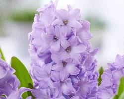
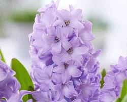

Roses
Their stems are usually prickly and their glossy, green leaves have toothed edges.
Rose flowers vary in size and shape. They burst with colours ranging from pastel pink, peach, and cream, to vibrant yellow, orange, and red. Many roses are fragrant, and some produce berry-like fruits called hips. 
Varieties of Rose that is available :
Grandiflora Roses
A Grandiflora rose is a beautiful blend of Floribunda and Hybrid Tea roses,
showcasing clusters of several flowers in groups of 3 to 5 on a single stem.
Hybrid Tea Roses
Among various rose varieties in India, hybrid tea roses are considered the best rose species.
They make the best cut flowers with each flower boasting between 30 to 50 delicate petals.
This rose is a crossbred variety of tea roses and perpetual roses.
Floribunda Roses
Floribunda roses are a crossbreed of Polyantha and Hybrid Tea roses.
They are known for their prolific blooms and thick groups of flowers
in yellows, whites, vibrant pinks, fiery reds, purples, and oranges.
Polyantha Roses
Polyantha roses are a compact and charming variety resulting from crossbreeding China roses and dwarf Polyantha roses.
They’re known for clusters of small blooms in various colours like delicate pinks, creamy whites, and vibrant reds.
Climber Roses

Climbing roses mimic vines but aren’t quite vines. While they may take a bit longer to establish themselves,
once settled, they bloom in a burst of colours, from soft pastels to vibrant shades.
Lilly
In Chinese culture, lilies are known to symbolize good luck and long-lasting love.
In addition to their usage at religious ceremonies, lilies have also been used for medicinal purposes.
The buds or oils of the lily have been known to reduce fever and make skin more firm, thus lessening wrinkles.
Varities of lily available :
Yellow Water Lily
The yellow water lily plant is considered to be quite popular. They are generally known for their gorgeous and blooming flowers
that grow inside ponds. The leaves of this plant are found in different variations, such as narrow and wide.
These plants float over water in ponds. The yellow looking beautiful flowers are incredibly noticeable.
Asiatic Lilies
The Asiatic lilies tend to breed from various other lily species. Different colours and shades can be seen of Asiatic lilies.
Asiatic lilies possess around six flowers within each stem.
Fish Lily Plant
Fish lily plants are also known as Peace Lily Plant. They are widely popular for their beautiful look as well as the benefits
they provide. They help in purifying the air and make the atmosphere fresh to breathe in.
Orienpet Lilies
This particular type of lily plant is known to be the best among all when it comes to summer sort of gardens.
The Orienpet lily possesses a shape of a trumpet shallow before blooming up completely.
Colour flowers
Here's a vast array of colors to be found in the world of flowers!
Here's a glimpse into some of the popular flower varieties categorized by their vibrant colors:
White Flowers
Purity, innocence, and new beginnings are some of the emotions symbolized by white flowers.
White roses, lilies, daisies, tulips, and hydrangeas are some of the many captivating white flowers.
Yellow Flowers
Yellow flowers often radiate happiness, cheerfulness, and warmth.
Sunflowers, daffodils, dandelions, marigolds, and chrysanthemums are some of the popular yellow blooms.
Orange Flowers

Orange flowers typically represent enthusiasm, energy, and fascination.
Gerberas, lilies, tulips, marigolds, and dahlias come in stunning shades of orange.
Red Flowers

Red flowers are symbolic of love, passion, desire, and strength.
Roses, carnations, tulips, lilies, and poppies are some of the well-known red flowers.
Purple Flowers
 

Purple flowers are associated with royalty, luxury, wisdom, and creativity.
Lavenders, irises, violets, orchids, and hyacinths are some of the beautiful purple blooms.
Blue Flowers
Blue flowers symbolize peace, tranquility, trust, and loyalty.
Hydrangeas, violets, forget-me-nots, bluebells, and cornflowers are some of the captivating blue flowers.